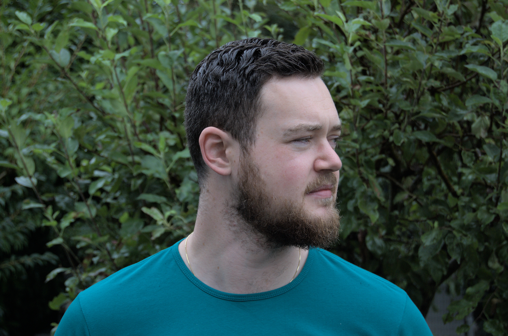

Hallo! Ik ben Dejorden

Welkom op mijn website! Mijn naam is Dejorden, een gedreven freelance web developer met een rijke
achtergrond in zowel game design als multimedia communicatie.
Mijn passie voor het digitale domein begon aan het Mediacollege Amsterdam waar ik in 2016
afstudeerde
als Game Artist. Deze ervaring gaf me een uniek perspectief op visueel design en gebruikerservaring,
wat
ik later verder ontwikkelde tijdens mijn opleiding Communicatie Multimedia Design, waar ik in 2021
mijn
diploma behaalde.
Tijdens mijn studie had ik de eer om stage te lopen bij Active Collective van augustus 2020 tot juni
2021. Deze ervaring gaf me de kans om hands-on te werken aan diverse projecten, waarbij ik mijn
technische vaardigheden en creativiteit kon combineren om innovatieve oplossingen te leveren.
Na mijn studie heb ik besloten mijn kennis te delen met de volgende generatie digitale makers. Als
docent software development aan het Mediacollege Amsterdam, van juni 2021 tot juli 2023, heb ik
studenten begeleid en geïnspireerd op hun eigen reis in de wereld van technologie en design.
Nu, als freelance web developer, zet ik mijn ervaring en passie in om op maat gemaakte, functionele
en
esthetisch aantrekkelijke websites te creëren voor mijn klanten. Ik ben altijd op zoek naar nieuwe
uitdagingen en mogelijkheden om samen te werken. Laten we samen iets geweldigs bouwen!